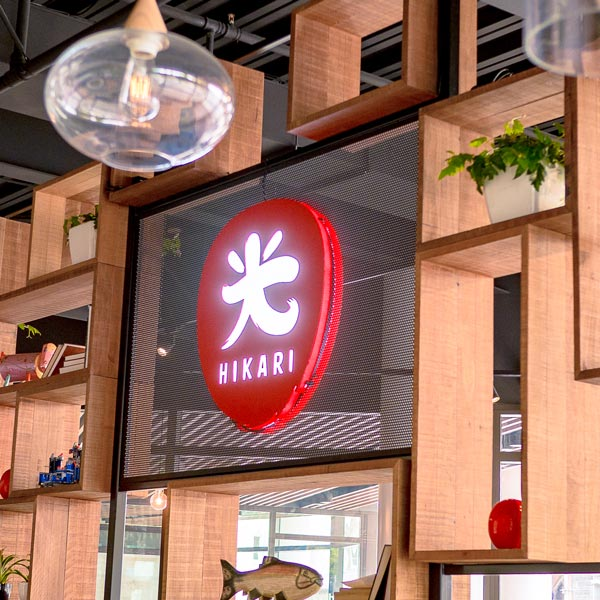
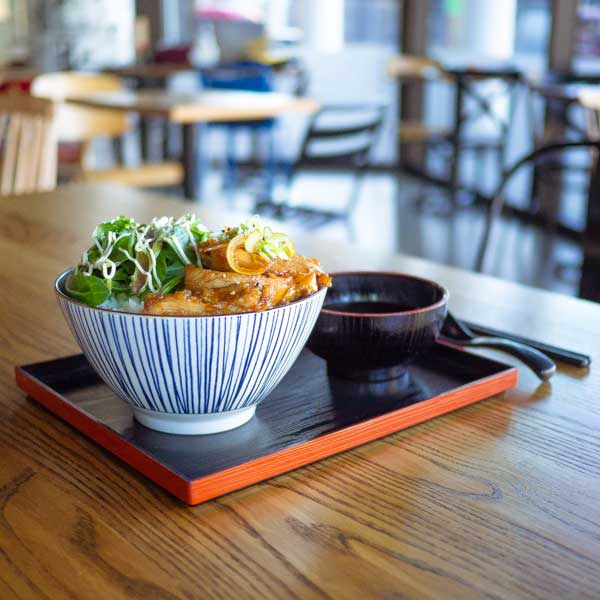
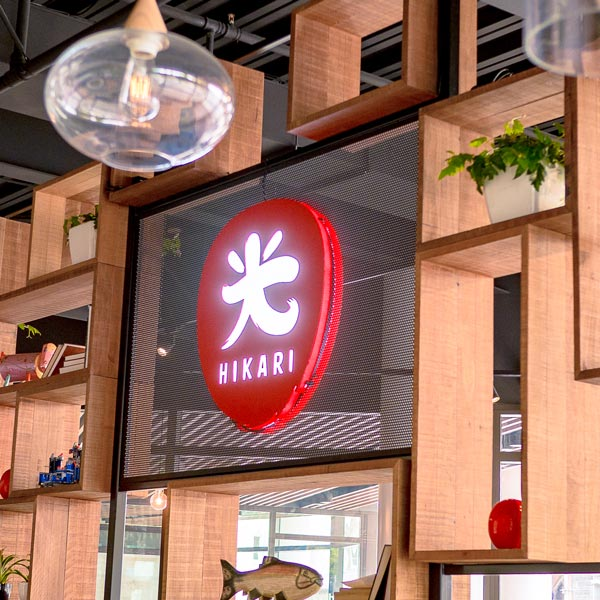
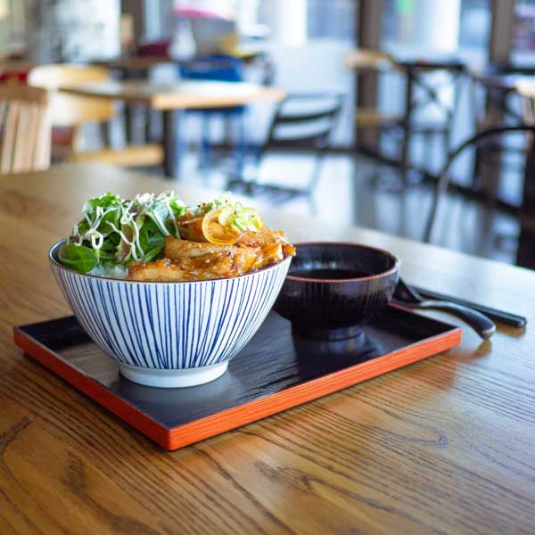

ALL YOU CAN EAT

ALL YOU CAN EAT
SUSHI
Inari
Inari Sushi (or inarizushi) is essentially a type of sushi consisting of sushi rice (rice lightly seasoned with a mixture of vinegar and sugar) stuffed in fried tofu skin.
MEAL
Noodles
Inari Sushi (or inarizushi) is essentially a type of sushi consisting of sushi rice (rice lightly seasoned with a mixture of vinegar and sugar) stuffed in fried tofu skin.
We are proud of offering the first & best Japanese Tapas dining experience in Christchurch! For 90 mins, we are going to feed you until you say stop! We know you will continue to support us to provide this beautiful experience to the hungry Cantabrians.
MENU


ABOUT
Hikari Sushi Bar, contemporary Japanese cuisine, have presented ourselves with high quality ingredients, top skilled chefs and an excellent customer service from the start to serve the best Sushi in New Zealand.


 


